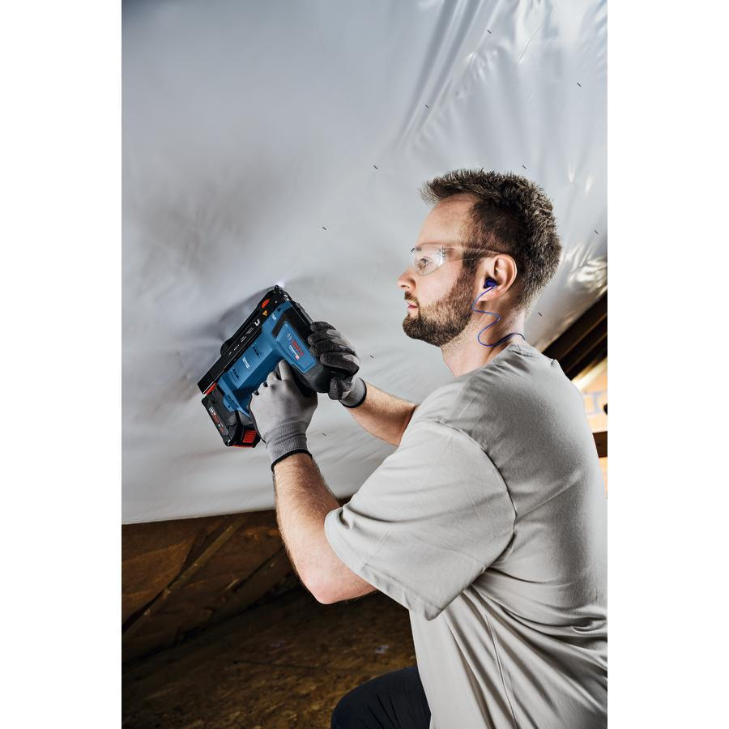
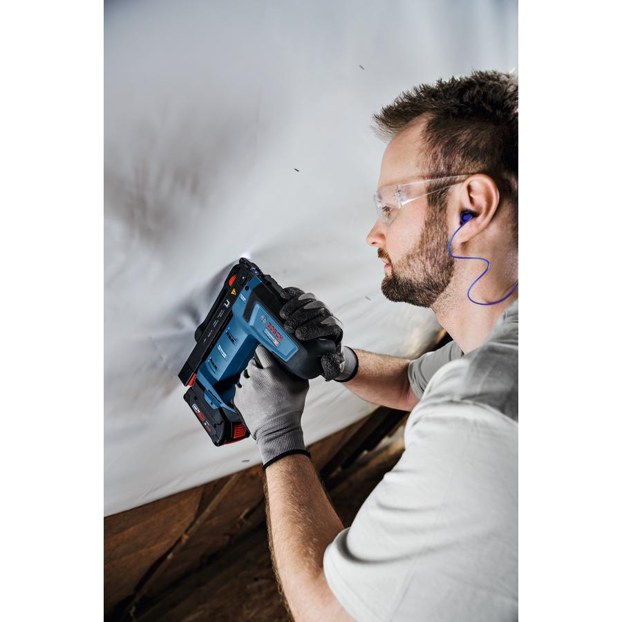
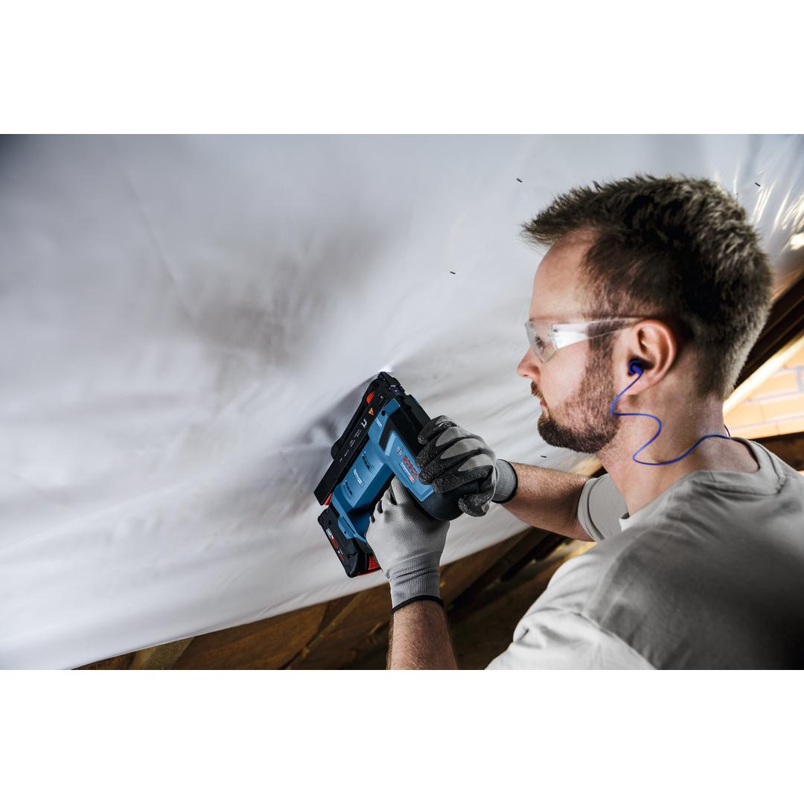
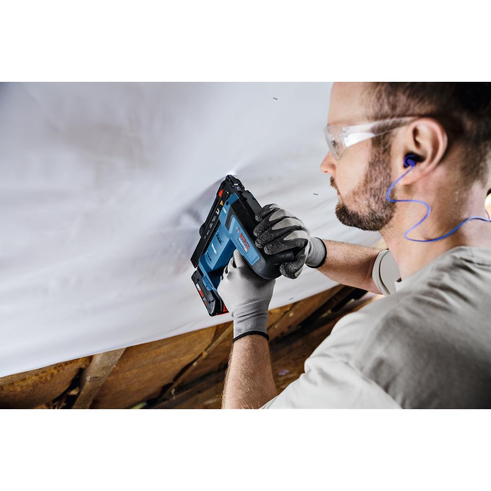
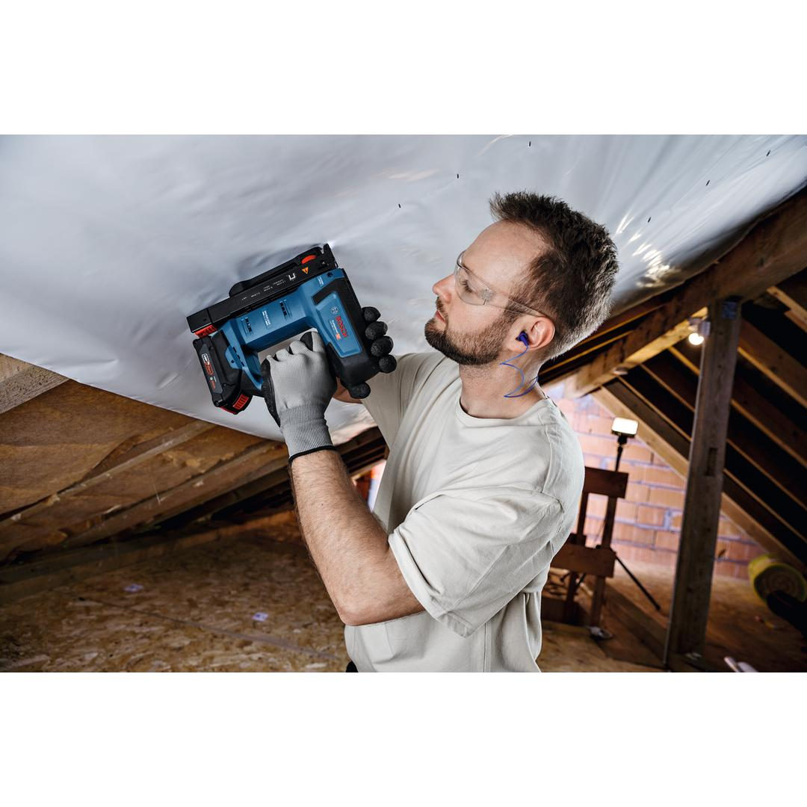
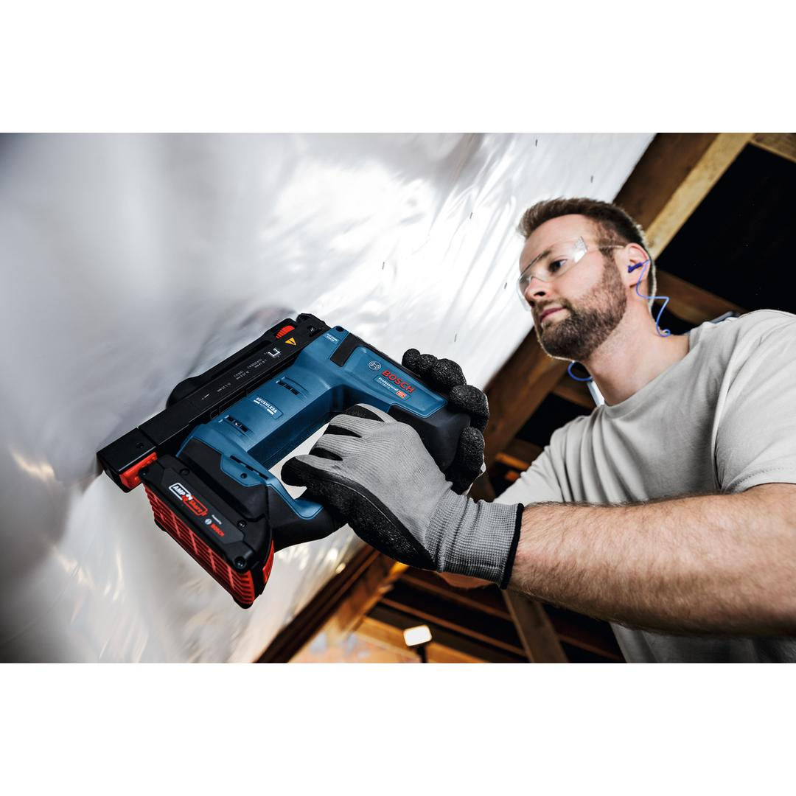
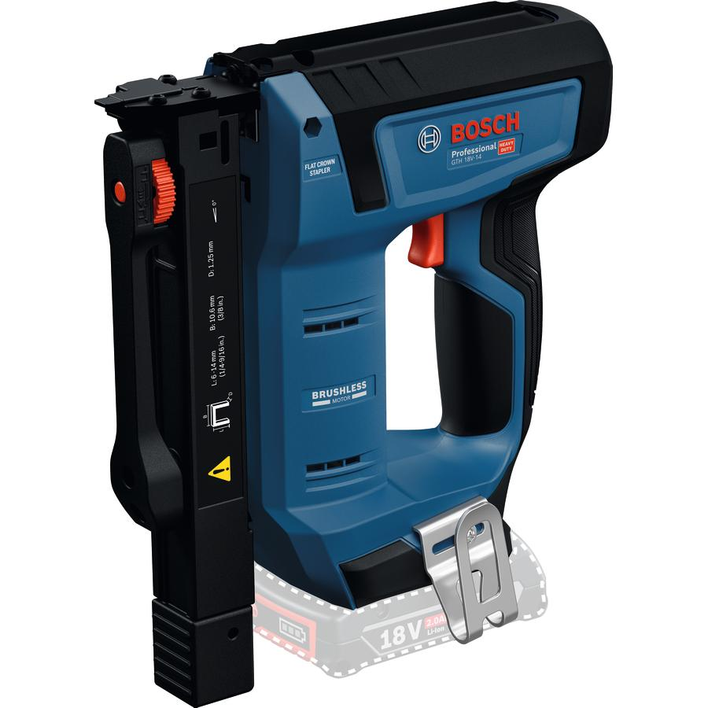

0601482800







The GTH 18V-14 wood stapler ensures fast work progress thanks to the Bosch 18V brushless motor. This stapler makes work less tiring with the counterbalance system which reduces recoil. And you can depend on consistent staple sinking without the insulation material ripping thanks to its reliable depth adjustment. Maintaining a consistent distance to the workpiece is easy with the large parallel contact surface and there’s an LED light that illuminates the working area
| Tool dimensions (width) |
81 mm |
| Tool dimensions (length) |
223 mm |
| Tool dimensions (height) |
247 mm |
| Battery voltage |
18.0 V |
| Collation angle |
0 ° |
| Staple width |
10.6 mm |
| Nail/Staple type |
Flat crown staple |
| Triggering system |
Single sequential actuation + Contact actuation with automatic reversion |
| Weight excl. battery |
1.8 kg |
| Magazine capacity |
100 Pcs |
| Compatible nails/staples |
Bosch nails |
| BITURBO |
No |
| Staple length |
6 – 14 mm |
Fast working progress with minimized recoil and maximum consistency
The GTH 18V-14 is for installing batten insulation, vapor barrier, and building wrap, tar paper, fabrics, leather and carpet on wooden surfaces and substructures
The GTH 18V-14 wood stapler operates with 6 – 14 mm staples. It has a contact trigger for both sequential and contact actuation and comes with a belt hook